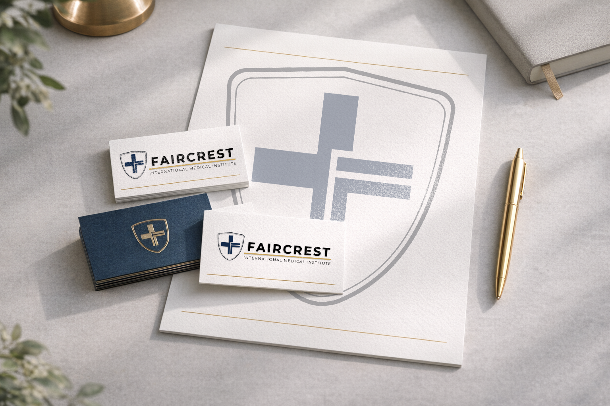
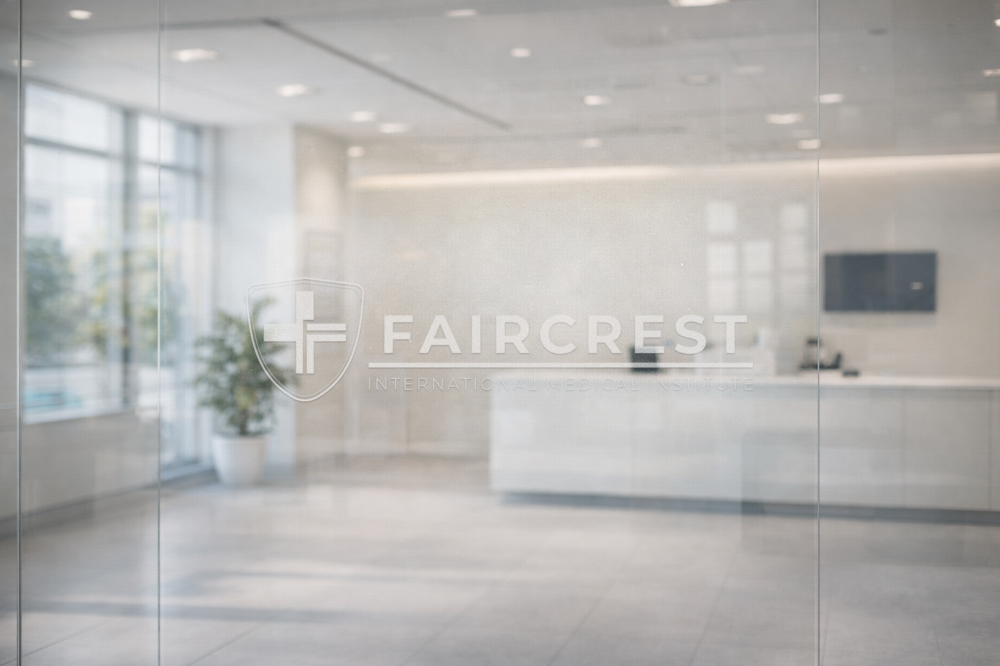

Faircrest
International Medical Institute
01. Overview
Building Trust in a Global Medical Institution
Faircrest required a brand that communicates authority, precision, and global credibility.
The identity balances institutional strength with human trust through a refined visual system.
02. Logo System
03. Logo Rationale
Protection
Shield symbolizes safety and trust.
Authority
Cross represents global healthcare.
Clarity
Clean geometry ensures scalability.
04. Applications

